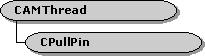

description: The CPullPin class provides support for input pins that pull data through the IAsyncReader interface. ms.assetid: 33a6c342-3896-41f8-b32d-01db3eed003e title: CPullPin class (Pullpin.h) ms.topic: reference ms.date: 4/26/2023 topic_type:
[The feature associated with this page, DirectShow, is a legacy feature. It has been superseded by MediaPlayer, IMFMediaEngine, and Audio/Video Capture in Media Foundation. Those features have been optimized for Windows 10 and Windows 11. Microsoft strongly recommends that new code use MediaPlayer, IMFMediaEngine and Audio/Video Capture in Media Foundation instead of DirectShow, when possible. Microsoft suggests that existing code that uses the legacy APIs be rewritten to use the new APIs if possible.]

The CPullPin class provides support for input pins that pull data through the IAsyncReader interface. Use this class if you are implementing a filter that uses the pull model to request data from the upstream filter. For more information, see Data Flow in the Filter Graph and Pull Model.
This class does not derive from CBasePin or implement the IPin interface, and some of the method names clash with IPin, so it is best used as a helper object inside your pin. To use this class, do the following:
CPullPin, and derive an input pin class from CBasePin. Declare an instance of the CPullPin object as a member variable of the pin class.| Public Member Variables | Description |
|---|---|
| m_pAlloc | Pointer to the IMemAllocator interface of the memory allocator. |
| Public Methods | Description |
| Active | Creates a worker thread that pulls data from the output pin. |
| AlignDown | Truncates a value to a specified alignment boundary. |
| AlignUp | Rounds a value up to a specified alignment boundary. |
| Connect | Completes a connection to the output pin. |
| CPullPin | Constructor method. |
| ~CPullPin | Destructor method. Virtual. |
| DecideAllocator | Negotiates an allocator with the output pin. Virtual. |
| Disconnect | Beaks the connection with the output pin. |
| Duration | Retrieves the duration of the stream. |
| GetReader | Returns a pointer to the output pin's IAsyncReader interface. |
| Inactive | Shuts down the worker thread that pulls data from the output pin. |
| Seek | Sets the start and stop positions of the stream. |
| Pure Virtual Methods | Description |
| BeginFlush | Informs the owning filter to flush the downstream filters. |
| EndFlush | Informs the owning filter to end a flush operation. |
| EndOfStream | Called after the object delivers the last sample. |
| OnError | Called if an error occurs during streaming. |
| Receive | Called when the object receives a media sample from the output pin. |
| Requirement | Value |
|---|---|
| Header | Pullpin.h (include Streams.h) |
| Library | Strmbase.lib (retail builds); Strmbasd.lib (debug builds) |